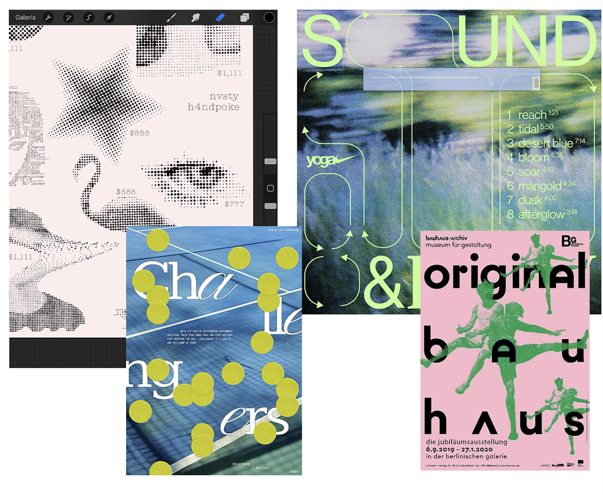
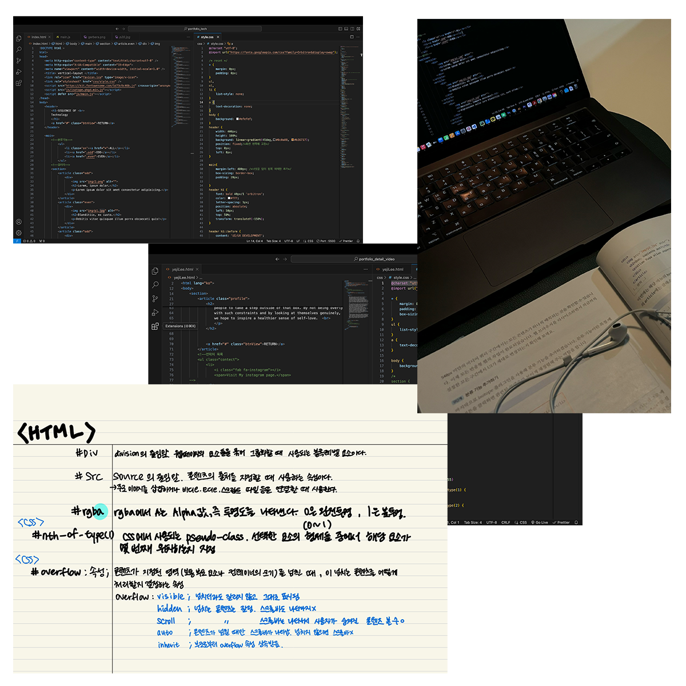

This portfolio project was my first attempt at working with HTML, CSS, and JavaScript. At the beginning, I had almost no background in web development. However, I steadily learned by reading books, watching tutorials, and asking AI tools to help me debug and understand code. I was motivated by the desire to turn the ideal designs I envisioned in my head into reality, pixel by pixel.
I didn’t want to create just another technical showcase — I wanted to embed a sense of exploration and personal growth into each step. While building these pages, I studied layout structure, flex/grid systems, responsive behavior, and animation effects. Each bug I fixed and line of code I tweaked brought me closer to understanding the logic behind digital design.
On the design side, I explored the concept of design language. Through moodboarding and visual reference studies, I learned how color, type, and spacing interact to convey emotion and identity. I paid attention to hierarchy, clarity, and cohesion throughout every page.
이 포트폴리오 프로젝트는 제가 처음으로 HTML, CSS, JavaScript를 활용해 작업해 본 시도였습니다. 처음에는 웹 개발에 대한 배경지식이 거의 없는 상태였습니다. 하지만 책을 읽고, 튜토리얼 영상을 찾아보고, AI 도구를 활용해 코드를 디버깅하고 이해하는 과정을 반복하며 조금씩 배워 나갔습니다. 제가 머릿속에서 그리던 이상적인 디자인을 픽셀 단위로 실제 화면 위에 구현해 보고 싶다는 마음이 이 프로젝트를 시작하게 된 가장 큰 동기였습니다. 이 프로젝트를 단순한 기술 시연으로 만들고 싶지는 않았습니다. 대신 탐색과 성장의 과정 자체가 담긴 작업이 되기를 바랐습니다. 페이지를 만들어 가는 동안 레이아웃 구조를 이해하고, flex와 grid 시스템을 실험하며, 반응형 동작과 애니메이션 효과도 함께 공부했습니다. 하나의 버그를 해결하고, 한 줄의 코드를 수정할 때마다 디지털 디자인이 작동하는 논리와 구조를 조금씩 이해하게 되었습니다. 디자인 측면에서는 **디자인 언어(design language)**라는 개념을 탐구했습니다. 무드보드와 다양한 시각적 레퍼런스를 분석하며 색상, 타이포그래피, 여백이 서로 어떻게 상호작용하면서 감정과 정체성을 전달하는지를 배웠습니다. 또한 각 페이지에서 정보의 위계, 가독성, 그리고 전체적인 통일성을 유지하는 것에도 꾸준히 신경 썼습니다.

